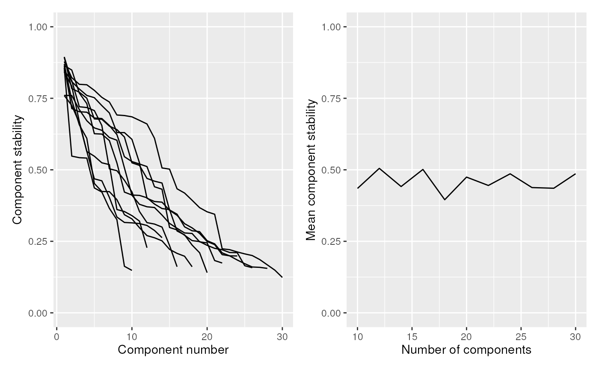
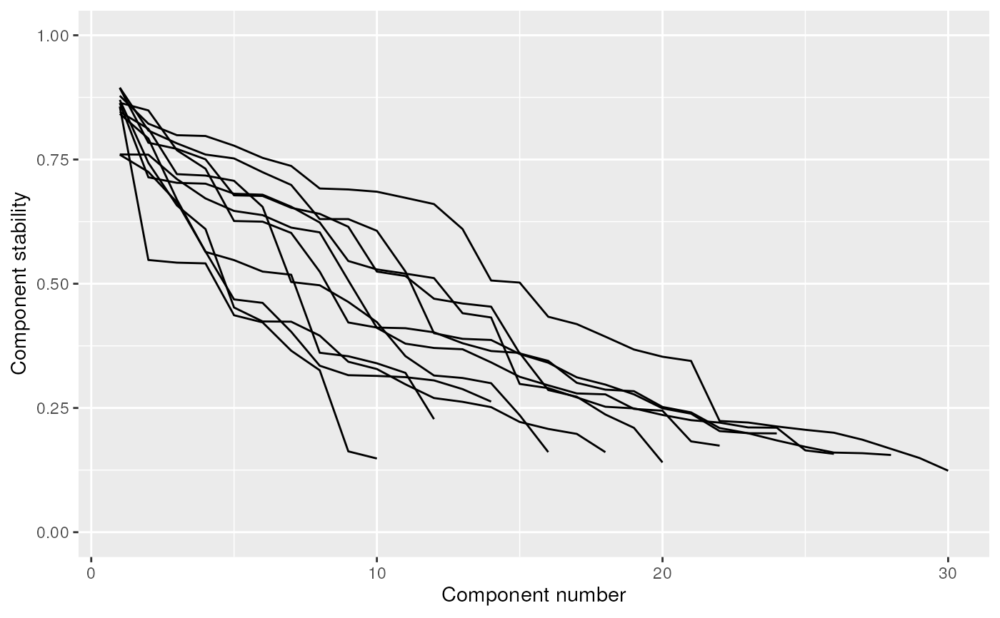
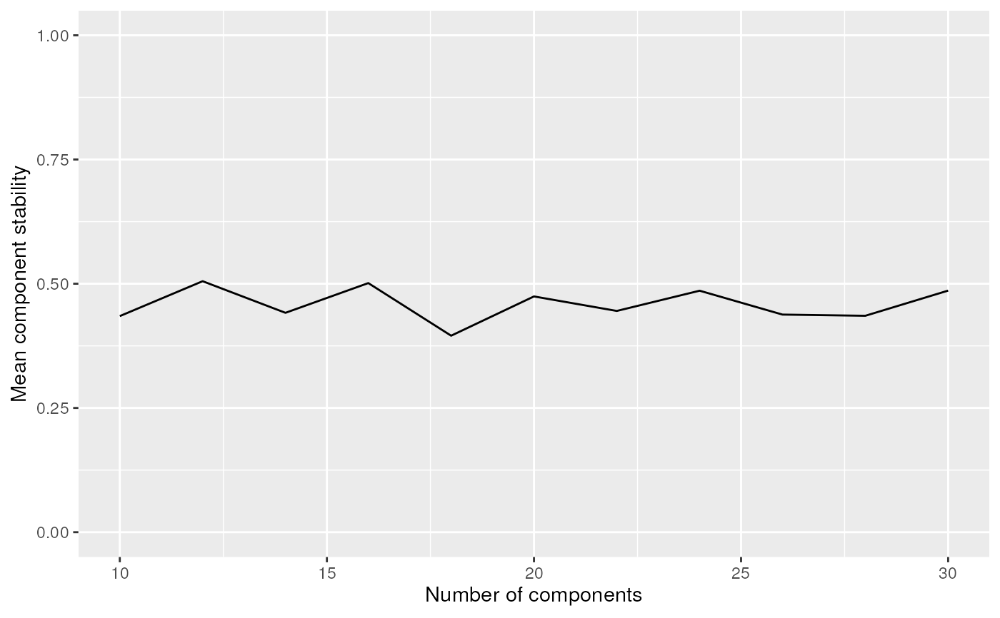

R/factors.R
estimate_stability.RdEstimates the stability of factors over a range of component numbers to aid in the identification of the optimal factor number.
estimate_stability(
X,
min_components = 10,
max_components = 60,
by = 2,
n_runs = 30,
resample = FALSE,
mean_stability_threshold = NULL,
center_X = TRUE,
scale_X = FALSE,
assay_name = "normal",
BPPARAM = BiocParallel::SerialParam(RNGseed = 1),
verbose = TRUE,
...
)Either a SummarizedExperimentSummarizedExperiment object
or a matrix containing data to be subject to ICA. X should have rows as
features and columns as samples.
The minimum number of components to estimate the stability for.
The maximum number of components to estimate the stability for.
The number by which to increment the numbers of components tested.
The number of times to run ICA. Ignored if use_stability is
FALSE. See details for further information.
If TRUE, a boostrap approach is used to estimating factors.
Else, random initialisation of ICA is employed. Ignored if use_stability
is FALSE. See details for further information.
The function will return the minimal number of components that exceed this stability threshold.
If TRUE, X is centered (i.e., features / rows are transformed to have a mean of 0) prior to ICA. Generally recommended.
If TRUE, X is scaled (i.e., features / rows are transformed to have a standard deviation of 1) before ICA.
If X is a
SummarizedExperimentSummarizedExperiment, then this should be the
name of the assay to be subject to ICA.
A class containing parameters for parallel evaluation. Uses
SerialParam by default, running only a single
ICA computation at a time. Ignored if use_stability
is FALSE. See details for further information.
If TRUE, shows a progress bar that updates for each number of components tested. Note that the time taken may not be linear, because the time taken to run ICA generally increases with the number of components.
Additional arguments to be passed to ReducedExperimentrun_ica.
Returns a list containing:
A data.frame indicating factor stabilities as a function of the number of components.
the selected number of components based on the
mean_stability_threshold.
Runs the stability-based ICA algorithm (see run_ica) for a range of component numbers. Estimates stability for each one, allowing for selection of the optimal number of components to be used for ICA. The results of this function can be plotted by plot_stability.
This algorithm is similar to the Most Stable Transcriptome Dimension (MSTD) approach (https://bmcgenomics.biomedcentral.com/articles/10.1186/s12864-017-4112-9).
The function automatically selects a number of components based on
mean_stability_threshold. Ideally, this should not be trusted blindly,
but instead a choice can be made based on visualisation of the
stabilities, as created by plot_stability. The
MSTD paper provides additional context and advice on choosing the number
of components based on these data.
# Get a random matrix with rnorm, with 200 rows (features)
# and 100 columns (observations)
X <- ReducedExperiment:::.makeRandomData(200, 100, "feature", "obs")
# Estimate stability across 10 to 30 components
stab_res_1 <- estimate_stability(X, min_components = 10, max_components = 30)
#>
|
| | 0%
|
|======= | 10%
|
|============== | 20%
|
|===================== | 30%
|
|============================ | 40%
|
|=================================== | 50%
|
|========================================== | 60%
|
|================================================= | 70%
|
|======================================================== | 80%
|
|=============================================================== | 90%
|
|======================================================================| 100%
# Convert the data matrix to a SummarizedExperiment, then estimate stability
se <- SummarizedExperiment(assays = list("normal" = X))
stab_res_2 <- estimate_stability(se, min_components = 10, max_components = 30)
#>
|
| | 0%
|
|======= | 10%
|
|============== | 20%
|
|===================== | 30%
|
|============================ | 40%
|
|=================================== | 50%
|
|========================================== | 60%
|
|================================================= | 70%
|
|======================================================== | 80%
|
|=============================================================== | 90%
|
|======================================================================| 100%
# Plot the stability
plot_stability(stab_res_1)
#> $combined_plot

#>
#> $stability_plot

#>
#> $mean_plot

#>